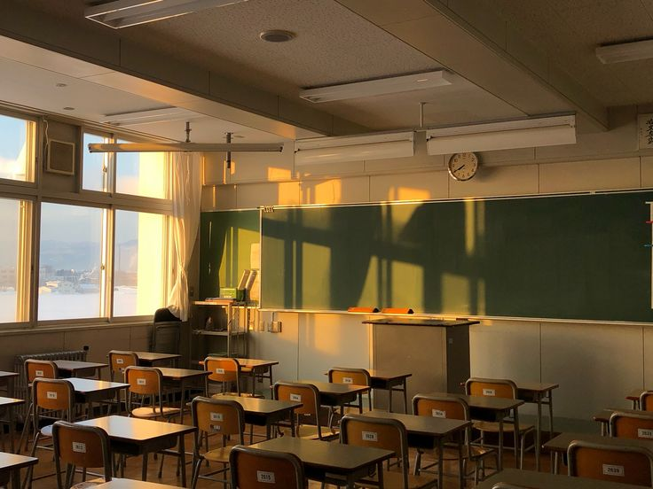

Founded in 2008, Cedarston International Christian School was established with a vision to provide high-quality education grounded in Christian faith and values. What began as a small learning community of just 120 students has grown into a thriving institution serving students from diverse backgrounds and cultures.
At Cedarston, we believe that education is about more than academic success. Our mission is to nurture the whole child - intellectually, spiritually, socially, and emotionally - while inspiring a lifelong love of learning.
Today, Cedarston proudly serves more than 1,000 students from Kindergarten through Senior Secondary School. Our dedicated team of educators helps every student reach their full potential through a challenging curriculum, modern learning resources, and personalized support.
To equip students with the knowledge, skills, faith, and character needed to succeed in a rapidly changing world while honoring God through excellence, service, and leadership.
To be a leading Christian school that develops confident learners, compassionate leaders, and responsible global citizens who make a positive impact in their communities and beyond.
"Equipping leaders, transforming lives, and impacting the world"
Cedarston is a Christ-centered school community dedicated to nurturing faith, character, and academic excellence. Guided by Christian values, we help students grow intellectually, spiritually, socially, and emotionally while preparing them to lead with integrity, compassion, and purpose. Our values shape every part of school life, encouraging learners to pursue excellence, serve others, and build a strong moral foundation.
We nurture a deep relationship with God and encourage students to live out their faith in all aspects of life.
We promote honesty, transparency, and ethical behavior in all interactions within our community.
We value each individual and foster an environment of mutual respect and appreciation.
We develop confident leaders who demonstrate integrity, compassion, and a commitment to service.

At Cedarston, students are encouraged to discover their strengths, ask thoughtful questions, and take responsibility for their learning.
Through academics, spiritual guidance, leadership opportunities, and school events, learners become part of a community that values purpose, discipline, and service.